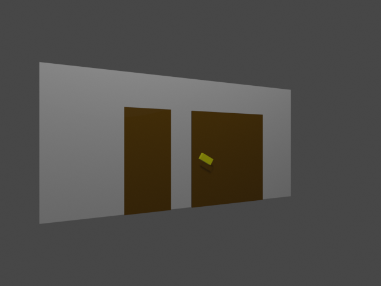
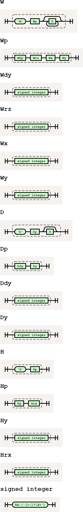
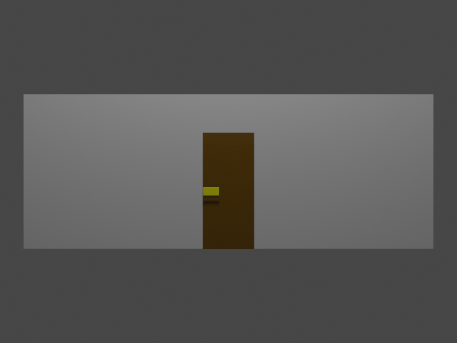
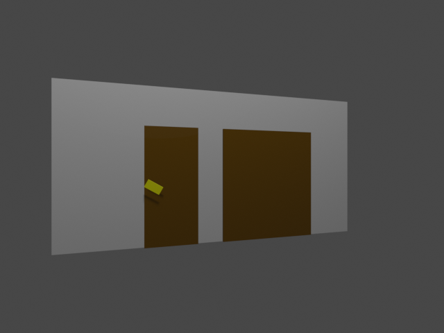
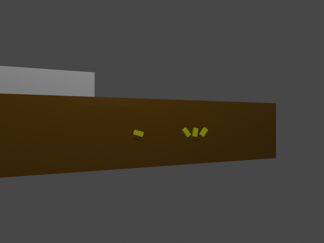
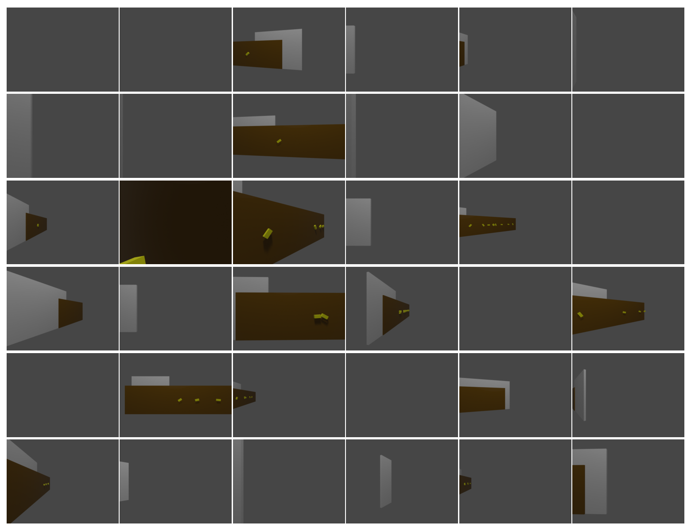

Data generation, ground truthing, and first ideas
import os, sys cwd = os.getcwd() sys.path.append(os.path.abspath(os.path.join(cwd, '..', 'src'))) fig_dir = os.path.abspath(os.path.join(cwd, '..', 'doc')) import PIL.Image show_image = PIL.Image.open from blender_render_scene import render
TL;DR
I want to define a ground-truth scene grammar whereby sentences like
W 6 20 5 0 D 2 -1 H 2 30 D 1 1
can be rendered to images ...
render('W 6 20 5 0 D 2 -1 H 2 30 D 1 1')

... and, from there, use this as a testing environment to develop neural networks with an inductive bias towards representing natural scenes with either 1. a grammar we provide, of objects of interest (e.g., objects with useful robotic affordances like handles or tools or steps), or 2. a grammar created during training in response to the data or, even in response to embodied experiences.
Introduction
Lately LLMs have gotten really good at imitating languages (most notably human language), even zero-shot. Even better, they're starting to be joined to image pipelines for both input and output.
On the other hand, one of the (perhaps abandoned) tasks of robotics is to build semantically structured maps of the environment. Most performant SLAM approaches these days instead use a granular data-driven approach.
One historical barrier to structured mapping was the brittleness of object recognition--unseen instances of even known object classes could not easily be ingested to the map. However, with modern multimodal foundation models, we might be able to get the best of both worlds: a structured map with a data-driven structure (a language, and flexible recognition of the objects of that language's grammar.
Here, I'll demonstrate some partial work towards this idea.
A Grammar for Handle-on-Door-in-Wall Scenes
I'll start by defining a grammar of very simple scenes: exactly one wall, with zero or more doors in that wall, and zero or one handles per door.
Strings in this grammar look like this:
scene_description = 'W 8 0 5 0 D 1 0 H 1 0'
Here, we describe - one wall 8 meters long, - with $0^\circ$ rotation, - 5 meters forward from the viewer, and - 0 meters offset from the viewer; - with one door that's - 1 meter wide and - centered on the wall; and - with a handle offset 1/3 meters from the door's center (the 3 is hardcoded in the grammar parser) - with $0^\circ$ rotation.
Note that we're limiting ourselves to signed integers for the numeric parts, as a simplifying assumption.
Let's implement this.
import scene_graph_gt as gt
First, we note that we can use a regular expression for quick validation of strings in this grammar:
checker = gt.GrammarChecker() checker.wall_regex_no_labels
'W (-?\\\\d+) (-?\\\\d+) (-?\\\\d+) (-?\\\\d+)( D (-?\\\\d+) (-?\\\\d+)( H (-?\\\\d+) (-?\\\\d+))?)*'
However, to do more interesting things with the grammar, we'll need to parse it. We'll use the library pyparsing.
parser = gt.Parser() gt.show_grammar(png_path=os.path.join(fig_dir, 'full_scene_grammar.png')) show_image(os.path.join(fig_dir, 'full_scene_grammar.png'))

We can use this grammar to parse our scene description to a dictionary ...
parser.parse_scene_string(scene_description)
[{'wall': {'angle': 0,
'length': 8,
'offsets': (5, 0),
'doors': [{'length': 1,
'offset': 0,
'handle': {'offset': 1, 'angle': 0}}]}}]
... or to a tree of useful classes with helpful reprs.
parser.parse_scene_string(scene_description, as_dict=False)
[Wall(dy=8 m (D), rz=0 deg, x=5 m, y=0 m, doors=[Door(dy=1 m (D), y=0 m, handle=Handle(y=1 m, rx=0 deg))])]
(Note that both are actually lists of what I said, because we want to expand later to scenes with multiple walls. But that's a problem for future us.)
Random Sampling
One other way that our regex description is useful is for generating random samples from the language. For this, we use the library hypothesis for this. But an important caveat that the strings are all ASCII! The \d in the regex can match some other languages as well:
import hypothesis, re hypothesis.seed(4) regex = '\d' * 12 print('Any Unicode:', hypothesis.strategies.from_regex(regex, fullmatch=True).example()) print('ASCII Only:', hypothesis.strategies.from_regex(re.compile(regex, re.ASCII), fullmatch=True).example())
Any Unicode: 11 ASCII Only: 687748656284
So, some samples:
sample_strings = [] for i in range(4): sample_strings.append(checker.sample()) print(sample_strings[-1])
W -63724542779 44 6361587958637131810475 -63724542779 D 0621262966150 772480323022437516952535 H 2949465 0 W -0512060 83 -7 -67377883429 D -197742176 7 H 0892148694159354859726166593 -3424708779974 D 6 -02 D 6516 -27895 D 778997928900393 -2 H 9 -59 D 661 -135364923 D 0272326197109412757 93260512394965 H -108803146073241 5 D -30346857705440635 -78345636 W 3 -5902 1 -876 W 727719 3 -7 -2913432 D -129285487554 049856513 D 30555 10540 D -70 -577 H 461129 07502 D 66119096579461386181 346 H 6753940555758 84292689 D -13 2397 H 01004640 5532 D -148 -3
This might be a good exploration of the structural space, of the language, but the numeric values aren't too nice. Instead, we'll take the trees for each of these, and run a few visitors over them, replacing numeric values with samples from more reasonable distributions (depending on whether the number represents an angle, an unsigned length, or a signed distance).
fixed_asts = [] for i in range(len(sample_strings)): print(i) ast = parser.parse_scene_string(sample_strings[i], as_dict=False) print('Before:', ast) parser.resample_large_numbers_inplace(ast) print('After: ', ast) fixed_asts.append(ast)
0 Before: [Wall(dy=-63724542779 m (D), rz=44 deg, x=6361587958637131810475 m, y=-63724542779 m, doors=[Door(dy=621262966150 m (D), y=772480323022437516952535 m, handle=Handle(y=2949465 m, rx=0 deg))])] After: [Wall(dy=4 m (D), rz=44 deg, x=6 m, y=4 m, doors=[Door(dy=5 m (D), y=4 m, handle=Handle(y=2 m, rx=0 deg))])] 1 Before: [Wall(dy=-512060 m (D), rz=83 deg, x=-7 m, y=-67377883429 m, doors=[Door(dy=-197742176 m (D), y=7 m, handle=Handle(y=892148694159354859726166593 m, rx=-3424708779974 deg)), Door(dy=6 m (D), y=-2 m, handle=None), Door(dy=6516 m (D), y=-27895 m, handle=None), Door(dy=778997928900393 m (D), y=-2 m, handle=Handle(y=9 m, rx=-59 deg)), Door(dy=661 m (D), y=-135364923 m, handle=None), Door(dy=272326197109412757 m (D), y=93260512394965 m, handle=Handle(y=-108803146073241 m, rx=5 deg)), Door(dy=-30346857705440635 m (D), y=-78345636 m, handle=None)])] After: [Wall(dy=3 m (D), rz=83 deg, x=1 m, y=2 m, doors=[Door(dy=2 m (D), y=5 m, handle=Handle(y=5 m, rx=-18 deg)), Door(dy=6 m (D), y=3 m, handle=None), Door(dy=6 m (D), y=6 m, handle=None), Door(dy=3 m (D), y=6 m, handle=Handle(y=3 m, rx=-59 deg)), Door(dy=4 m (D), y=6 m, handle=None), Door(dy=5 m (D), y=4 m, handle=Handle(y=1 m, rx=5 deg)), Door(dy=5 m (D), y=5 m, handle=None)])] 2 Before: [Wall(dy=3 m (D), rz=-5902 deg, x=1 m, y=-876 m, doors=[])] After: [Wall(dy=3 m (D), rz=-162 deg, x=1 m, y=5 m, doors=[])] 3 Before: [Wall(dy=727719 m (D), rz=3 deg, x=-7 m, y=-2913432 m, doors=[Door(dy=-129285487554 m (D), y=49856513 m, handle=None), Door(dy=30555 m (D), y=10540 m, handle=None), Door(dy=-70 m (D), y=-577 m, handle=Handle(y=461129 m, rx=7502 deg)), Door(dy=66119096579461386181 m (D), y=346 m, handle=Handle(y=6753940555758 m, rx=84292689 deg)), Door(dy=-13 m (D), y=2397 m, handle=Handle(y=1004640 m, rx=5532 deg)), Door(dy=-148 m (D), y=-3 m, handle=None)])] After: [Wall(dy=3 m (D), rz=3 deg, x=4 m, y=3 m, doors=[Door(dy=3 m (D), y=2 m, handle=None), Door(dy=5 m (D), y=6 m, handle=None), Door(dy=2 m (D), y=6 m, handle=Handle(y=2 m, rx=-163 deg)), Door(dy=2 m (D), y=4 m, handle=Handle(y=1 m, rx=-72 deg)), Door(dy=6 m (D), y=2 m, handle=Handle(y=4 m, rx=65 deg)), Door(dy=5 m (D), y=1 m, handle=None)])]
Rendering
For our image tasks, we'll want to render these scenes. We'll use Blender to do this. I have never done as much as deleted the default cube by Blender GUI before, and I'm not about to start now--we'll drive it fully from Python.
Briefly, we do this by drawing all walls, doors, and handles as rectangular cuboids, parented appropriately (since the grammar implies relative coordinates). Cuboids are created from scratch by their eight vercies, six faces, and twelve edges defined relative to the parent frame.
We add a single point light source high up, and use a camera with a reasonable focal length, field of view, and resolution.
render(scene_description)

This looks nice, and we can do it for other scene descriptions as well. Let's draw a scene with a narrow door with a rotated handle, and a wide door without. The wall will be slightly rotated as well.
two_doors = 'W 6 15 5 0 D 1 1 H 1 30 D 2 -1' render(two_doors)

However, if we render some of our random samples, we'll see that they have some problems (even with our fixes to the numeric values, simplifed to parser.sample), such as ...
Fully off-screen geometry ...
render('W 2 -2 2 6 D 4 5 H 1 0 D 2 3 D 6 1 H 3 9 D 3 3 D 2 4 H 1 164 D 6 2 D 2 2 D 6 3 D 4 6 D 4 4 H 6 42')
... or 1. overlapping doors, 2. doors that extend beyond the wall that's supposed to contain them, and 3. (not necessarily a problem) geometry that extends off-screen, making the full description of the scene unknowable
:
render('W 4 -164 5 4 D 6 6 D 6 3 D 5 2 H 4 -17 D 5 2 D 1 2 D 1 4 H 5 -127 D 3 3 H 6 127 D 6 4 D 2 4 H 4 80 D 4 4')

Here are a few more:
show_image(os.path.join(fig_dir, 'random_scenes.png'))

We'll have do deal with that in future work, however, because I'm done working on this for now.
Future Work
- Filter random samples for physical validity.
- Filter random samples for on-screen visibility.
- Extend the grammar to multiple walls, joined at corners.
- Train some networks!
- Make something like an autoencoder for our images--start with simple convolutional and LSTM nets trained from scratch, then move to fine-tuning of big pre-trained networks.
- How can we constrain the encoder to produce sentences in our grammar (or, at least, a grammar it decides on itself)?
- How can we make our autoencoder probabilistic? Both the encoder $p(X|S)$ and decoder $p(S|X)$, where $X$ is the encoding and $S$ is the sense (image).
- Do online Bayesian inference in these scenes.
- If the Bayes update is posterior $ = p(X|S) \propto p(S|X) p(X)$, then how can we embed in a larger network either a KF, EKF, UF, or PF to handle the representation of the prior $p(X)$?